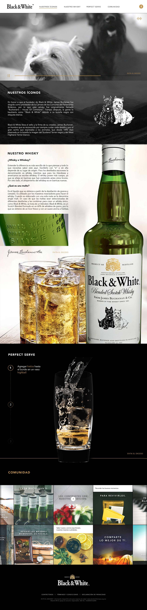

<div class="ajax-get" id="p-scroll">
	<div class="ajax-container">
		<hgroup>
			<h3>Black & White</h3>
			<h4>Front-End, Maquetado, Funciones JS</h4>
			<h5><a href="http://blackandwhitewhisky.mx/" target="_blank">http://blackandwhitewhisky.mx/</a></h5>
		</hgroup>
		<div class="content">
			<p>Diseñado/Desarrollado en KTBO por el equipo de Desarrollo para DIAGEO y Black & White México. Mi participación fue en el front-end con la maquetación y creación de funciones necesarias para el sitio y la adaptación a dispositivos móviles. Se utilizó SublimeText 3 como IDE, Prepros para procesar LESS y Gulp para minificar y unificar CSS/JS</p>
			
		</div>
	</div>
</div>